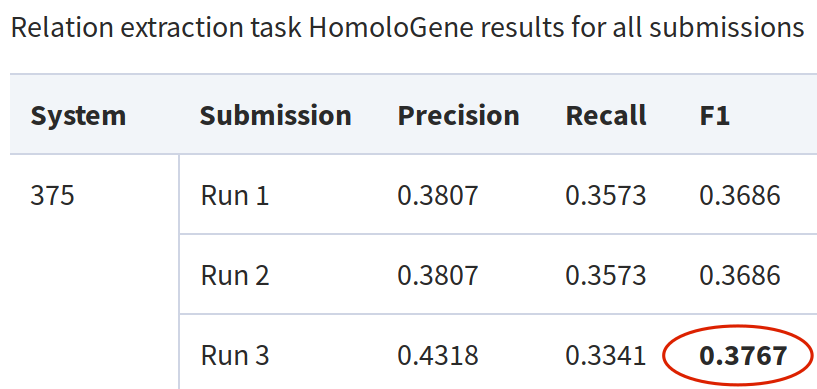
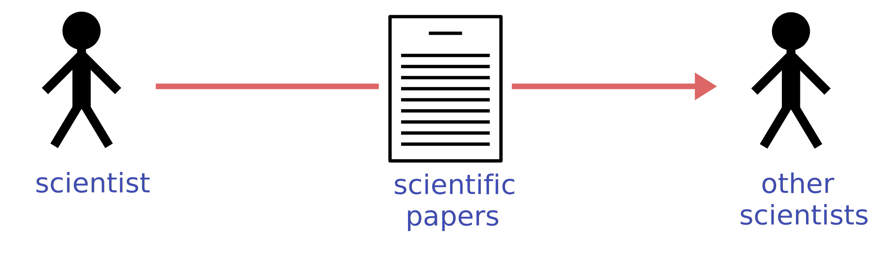
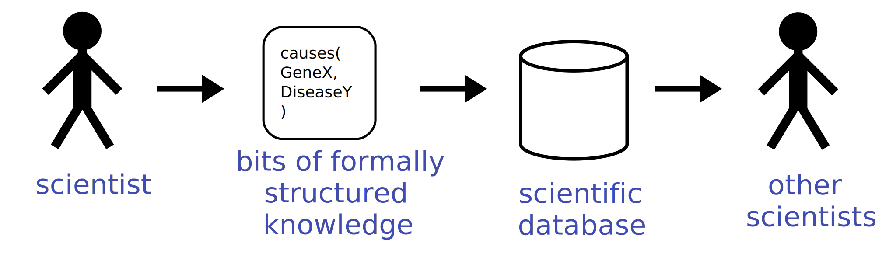
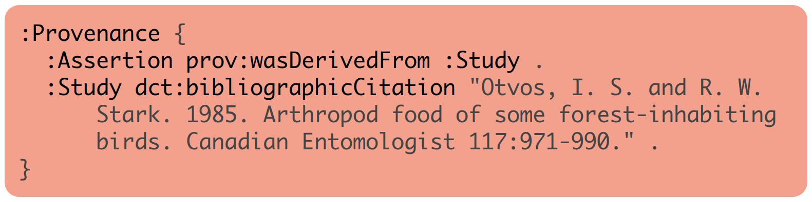
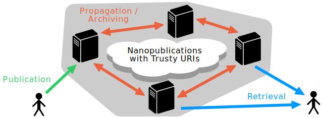
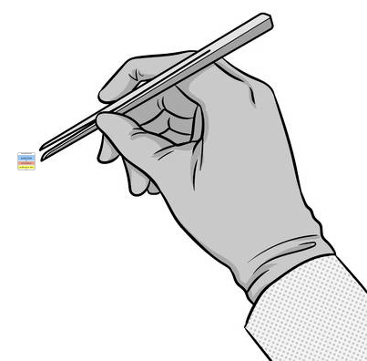
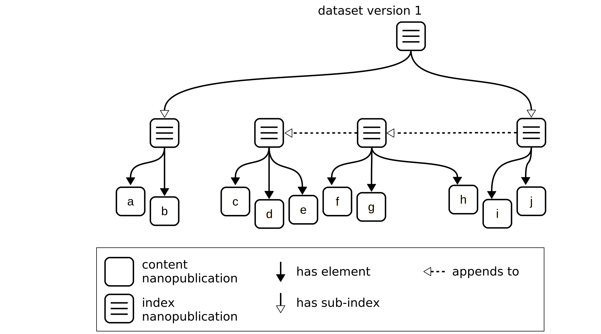

Making Workflows FAIR with Nanopublications
Tobias Kuhn
VU University Amsterdam
http://www.tkuhn.org
Lorentz Workshop on Automated Workflow Composition in the Life Sciences, Leiden, Netherlands, 13 March 2020
These slides: https://tinyurl.com/nanopubs4workflows
Global Knowledge Communication Crisis

Global Knowledge Communication Crisis

Global Knowledge Communication Crisis

Automatic Text Mining is Not Good Enough
BioCreative VI Challenge and Workshop 2017, Task 4 on mining protein–protein interactions:

Manual Text Mining is Slow and Expensive
Around 50 biocurators employed just to feed a few European protein databases:
"Text mining? ... Why bury it first and then mine it again?" (Barend Mons)

We Need a New Paradigm for Scientific Publishing
We Need a New Paradigm for Scientific Publishing
Nanopublications

Nanopublication Example
(from Ecology)

Nanopublication Example:
Assertion

Nanopublication Example:
Assertion

Nanopublication Example:
Assertion
Nanopublication Example:
Assertion

Nanopublication Example:
Assertion

Nanopublication Example:
Assertion

Nanopublication Example:
Assertion

Nanopublication Example:
Assertion

Nanopublication Example:
Assertion

Nanopublication Example:
Provenance

Nanopublication Example:
Provenance

Nanopublication Example:
Provenance

Nanopublication Example:
Publication Info

Nanopublication Example:
Publication Info

Nanopublication Example:
Publication Info

Nanopublication Example:
Publication Info

Nanopublication Example:
Publication Info

Nanopublication Example
Nanopublication Example

Trusty URIs make resources ...

Trusty Nanopublications

Trusty Nanopublications

Trusty Nanopublications

Trusty Nanopublications

A Server Network for Nanopublications
More than 10 Million Nanopublications on Decentralized Server Network


Nanopublication Datasets
So far mostly from the Life Sciences:
- DrugBank/Bio2RDF
- Global Biotic Interactions (GloBI)
- OpenBEL
- Human Protein Atlas
- neXtProt subset
- GeneRIF/AIDA
- DisGeNET
- WikiPathways
- Linked Drug-Drug Interactions (LIDDI)
- ...
Dealing with Nanopublications...
Indexes and Versioning

Indexes and Versioning
Indexes and Versioning
Indexes and Versioning

Indexes and Versioning
Nanopublication Overhead Becomes Advantage for Evolving Datasets

Nanopublication Overhead Becomes Advantage for Evolving Datasets

Citing Subsets in Papers
20 Publications that Used DisGeNET:

We can now cite these subsets:
"... we used DisGeNET data about these diseases [27]"
[27] Nanopublications from DisGeNET v4.0.0.0 about umls:C0003507 or umls:C1956346. http://purl.org/np/RAcf4tihZLL_aK81hwThIrNxjOhks4sEloBStEgzyR1tI, 11 May 2017.

How does it apply to workflows?
Workflows: Beyond Computational...
What about manual steps?
What about protocols, in the sense of abstract workflows?
Can we cover all of that with an integrated semantic model?
... in a FAIR way!
Including retrospective provenance (execution traces), input/output data, versioning, ...
Semantic Models for Workflows


It's all there and only needs to be connected
Case Study: OpenPREDICT
CQ1.1: Which steps are meant to be executed manually and which ones computationally?
Preprint: https://arxiv.org/abs/1911.09531
Workflow Step as a Nanopublication
sub:cleanText dct:description """
import string
import re
from cleantext import clean
def cleanText(text):
s= clean(text, fix_unicode=True, to_ascii=True, lower=False, no_line_breaks=True, lang=\"en\" )
s= re.sub(r'\\|+', '|', s)
s= s.replace('|', '\\r\\n')
return s
""" ;
dct:language plex:ComputerLanguage_Python_3.7 ;
p-plan:hasInputVar sub:input_text ;
p-plan:hasOutputVar sub:output ;
a bpmn:ScriptTask , edam:operation_2409 , p-plan:Step ;
rdfs:label "cleanText" .
sub:input_text rdfs:label "text" .
}
sub:assertion prov:wasAttributedTo orcid:0000-0001-7769-4272 , orcid:0000-0002-1267-0234 .
}
this: dct:created "2020-03-11T09:06:10.873+01:00"^^xsd:dateTime ;
dct:creator orcid:0000-0002-1267-0234 ;
a npx:ExampleNanopub .
}
Composing Workflows
@prefix step1: <http://purl.org/np/RAwE920by4-7ZrpVziYs7auc_-tLDV8frasalysx56_38#> .
...
sub:plan dct:description "Process text and make aggregated statistics." ;
a p-plan:Plan .
step1:cleanText p-plan:isStepOfPlan sub:plan .
step2:processText p-plan:isStepOfPlan sub:plan .
step3:aggregateText p-plan:isStepOfPlan sub:plan .
step1:output p-plan:correspondsToVariable step2:input_text .
step2:output p-plan:correspondsToVariable step3:input_normalizedtext .
}
this: dct:created "2020-03-11T11:20:03.708+01:00"^^xsd:dateTime ;
dct:creator orcid:0000-0002-1267-0234 ;
a npx:ExampleNanopub .
}
Manual Workflow Step: Wet-lab Protocol
sub:inoculate-agar-plates dct:description "Using either a pipette, or, if the specimen is really viscous, a transfer pipette, inoculate both a RL+C and RL-C agar plate with 50ul of the specimen." ;
dct:language plex:LinguisticSystem_xsd_language_English ;
p-plan:hasInputVar sub:input_specimen ;
p-plan:hasOutputVar sub:output_agarplate1 , sub:output_agarplate2 ;
a bpmn:ManualTask , p-plan:Step .
sub:input_specimen a dbpedia:Body_fluid ;
rdfs:label "specimen from body fluid sample" .
sub:output_agarplate1 rdfs:label "inoculated RL+C agar plate" .
sub:output_agarplate2 rdfs:label "inoculated RL-C agar plate" .
}
sub:assertion prov:hadPrimarySource <https://www.protocols.io/view/standard-operating-procedure-for-culturing-bordete-kq9cvz6> .
}
this: dct:created "2020-03-11T09:32:15.576+01:00"^^xsd:dateTime ;
dct:creator orcid:0000-0002-1267-0234 ;
a npx:ExampleNanopub .
}
Manual Workflow Step: Cooking Recipe
sub:input_apple rdfs:label "1 apple, cored and chopped" .
sub:input_butter rdfs:label "1 tablespoon butter" .
sub:input_onion rdfs:label "1 onion, chopped" .
sub:make-curry-sauce dct:description "Melt the butter in a skillet over medium heat. Add the apple and onion to the melted butter, season with the curry powder, and cook and stir until the apple and onion are tender, 7 to 10 minutes." ;
dct:language plex:LinguisticSystem_xsd_language_English ;
p-plan:hasInputVar sub:input_apple , sub:input_butter , sub:input_onion ;
p-plan:hasOutputVar sub:output_currysauce ;
a bpmn:ManualTask , p-plan:Step .
}
sub:assertion prov:hadPrimarySource <https://www.allrecipes.com/recipe/216795/curried-chicken/> .
}
this: dct:created "2020-03-11T09:19:26.582+01:00"^^xsd:dateTime ;
dct:creator orcid:0000-0002-1267-0234 ;
a npx:ExampleNanopub .
}
Decentralized Nanopublication API
Thank you for Your Attention!
These slides:
https://tinyurl.com/nanopubs4workflows
Further links:
http://purl.org/nanopub/links